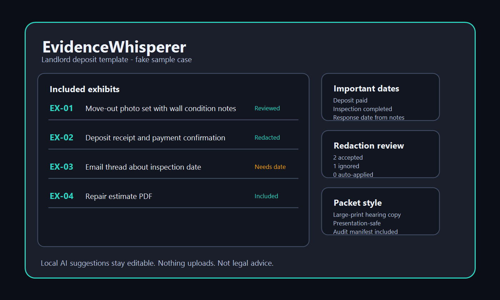

WINDOWS DESKTOP APP - LOCAL AI - NOT LEGAL ADVICE
Turn screenshots, receipts, PDFs, photos, exported emails, and notes into a reviewed evidence packet you can print, upload, email, or bring to a hearing. No account. No cloud upload. Everything stays on your computer.

EvidenceWhisperer is built around review. Local AI suggests structure; you approve the facts, redactions, order, and final export.
Choose landlord deposit, contractor, warranty, chargeback, unpaid invoice, or generic organization defaults. Every section and tag is editable.
Drop PDFs, images, text files, CSVs, HTML exports, or email-like text exports. Originals are copied into app-owned storage and never modified.
Edit dates, parties, organizations, amounts, issue tags, descriptions, exhibit titles, notes, and include/exclude decisions before export.
Review sensitive-detail suggestions, draw manual rectangles, accept or ignore each suggestion, and burn accepted redactions into exported copies.
Add dates you decide matter, link them to evidence, include or exclude them from outputs, and avoid automatic deadline advice entirely.
Use offline presentation mode for included/redacted evidence, or export packet styles for print, upload, timeline-first review, or exhibit binders.
The paid output is simple: readable files, source traceability, and redacted copies you can inspect before sharing.
EvidenceWhisperer runs on your Windows PC. Your source files, OCR text, extracted metadata, redaction decisions, notes, presentation view, and exports are not uploaded to Donbrico or any cloud workspace.
EvidenceWhisperer organizes materials you provide. It does not assess case strength, recommend claims or defenses, calculate legal deadlines, fill legal forms, or guarantee acceptance by a court, platform, landlord, bank, or other decision-maker.
Before manual release testing, generated fake dispute cases are run through real-situation automated scenarios with the Balanced local AI model. The scorecard covers templates, import, extraction, review, important dates, redaction suggestions, packet styles, presentation-safe display, privacy behavior, and not-legal-advice boundaries.
Try the full app for 15 days through the Microsoft Store. No watermark, no exhibit cap, no disabled export formats.
Free
Import, review, redact, present, and export real projects during the trial.
$39.99 launch
Regular v1 price: USD 59.99. Pay once. No subscription. No account.
No. It organizes evidence and exports packets. It does not recommend legal arguments, claims, defenses, forms, filing rules, or deadlines.
No. EvidenceWhisperer is local-first. Your files, OCR text, metadata, redactions, notes, presentation views, and exports stay on your computer.
PDF, PNG, JPG, TXT, MD, CSV, HTML, and EML-like text exports are in the v1 scope. Audio/video files can be attached as evidence but are not transcribed in v1.
No. Suggestions are review prompts. Nothing is applied or burned into an export until you accept or edit it, and you should review every output before sharing.
No. The important-dates tracker is manual. You can enter dates and link evidence, but the app does not calculate legal deadlines or jurisdiction-specific rules.
Start with the full-feature trial, use the sample case, or import your own evidence and inspect the export before buying.
Get on Microsoft Store - Free Trial